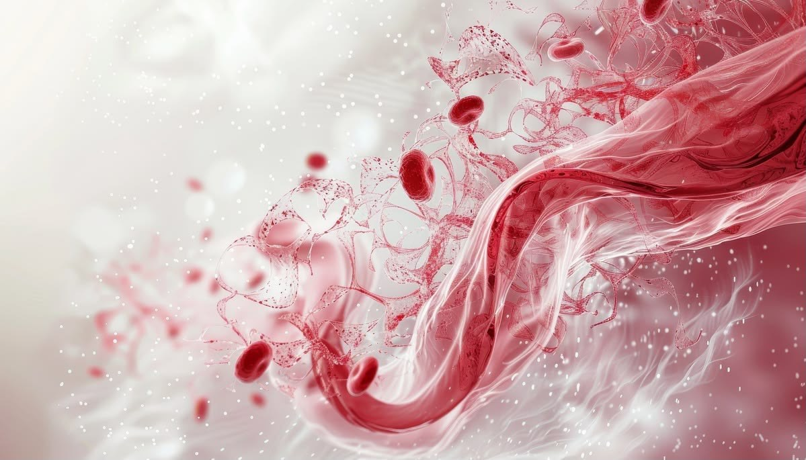
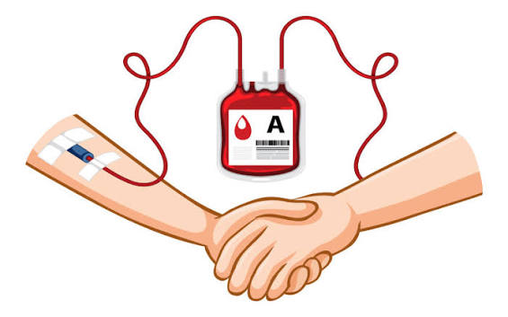

Portal informativo de doação de sangue
Uma pequena atitude pode fazer uma grande diferença.
Entenda os requisitos básicos, tire suas dúvidas e acesse diretamente os portais oficiais dos hemocentros para realizar a sua doação.
Por que doar?
O sangue não pode ser fabricado. Sua doação mantém vidas.
Os hemocomponentes são indispensáveis em cirurgias de emergência, tratamentos oncológicos, transplantes e atendimentos de urgência. Como não existe substituto artificial para o sangue humano, os estoques dependem exclusivamente da doação voluntária.
O Doe+ funciona como um guia claro para orientar novos doadores e encaminhar você diretamente aos hemocentros oficiais.

Encaminhamento direto
Acesse os hemocentros oficiais
O Doe+ não realiza agendamentos próprios. Escolha abaixo o hemocentro oficial da sua região ou localize a unidade mais próxima.
Localização rápida
Abrir no Google Maps ↗
Hemocentro mais próximo
Pesquise unidades de coleta próximas à sua localização atual diretamente no Google Maps.
Minas Gerais
Acessar Hemominas ↗
Fundação Hemominas
Portal oficial da rede pública de hemoterapia de Minas Gerais para consulta de unidades e agendamento.
São Paulo
Acessar Pró-Sangue ↗
Fundação Pró-Sangue
Hemocentro de São Paulo com informações de estoques, postos de coleta e agendamento online.
Rio de Janeiro
Acessar Hemorio ↗
Hemorio
Instituto Estadual de Hematologia Arthur de Siqueira Cavalcanti, referência no estado do Rio de Janeiro.
Distrito Federal
Acessar FHB ↗
Hemocentro de Brasília
Fundação Hemocentro de Brasília com orientações para doadores e agendamento de coleta no DF.
Brasil
Acessar Gov.br ↗
Ministério da Saúde
Portal nacional com orientações oficiais, critérios clínicos e informações sobre a rede de hemoterapia.
Comece por aqui
Doar é mais simples quando você sabe o que esperar
Confira as quatro etapas básicas do processo antes de comparecer ao hemocentro.
Informe-se
Verifique os requisitos básicos e confirme as orientações no site oficial do hemocentro.
Prepare-se
Durma bem, alimente-se de forma leve, hidrate-se e leve um documento oficial com foto.
Faça a triagem
A equipe de saúde realiza uma entrevista confidencial para garantir a sua segurança e a do receptor.
Doe e cuide-se
A coleta dura poucos minutos. Após o procedimento, faça o lanche oferecido e hidrate-se.

Entenda o impacto
Tipos sanguíneos, compatibilidade e o destino da sua doação
Após a coleta de aproximadamente 450 ml de sangue, o material passa por rigorosos testes laboratoriais e é fracionado em diferentes hemocomponentes, permitindo que uma única doação ajude até quatro pacientes em situações distintas.
Todos os grupos sanguíneos (A, B, AB e O, com fator Rh positivo ou negativo) são fundamentais para manter os bancos de sangue equilibrados durante todo o ano, especialmente em feriados e períodos de baixa nos estoques.
Uma bolsa salva até 4 vidas
O sangue coletado é separado em concentrado de hemácias, plaquetas, plasma fresco congelado e crioprecipitado, atendendo desde vítimas de acidentes até pacientes em quimioterapia.
Compatibilidade ABO e Fator Rh
O tipo O negativo (O-) é conhecido como doador universal de hemácias em emergências, enquanto o AB positivo (AB+) é o receptor universal. Ainda assim, transfusões priorizam sempre o mesmo tipo sanguíneo do paciente.
Frequência e reposição rápida
O organismo repõe o volume plasmático em cerca de 24 horas. Homens podem doar a cada 60 dias (até 4 vezes ao ano) e mulheres a cada 90 dias (até 3 vezes ao ano).
Mesmo que você ainda não saiba o seu tipo sanguíneo, é possível doar normalmente: o hemocentro realiza a tipagem completa e os exames sorológicos gratuitamente após a coleta.